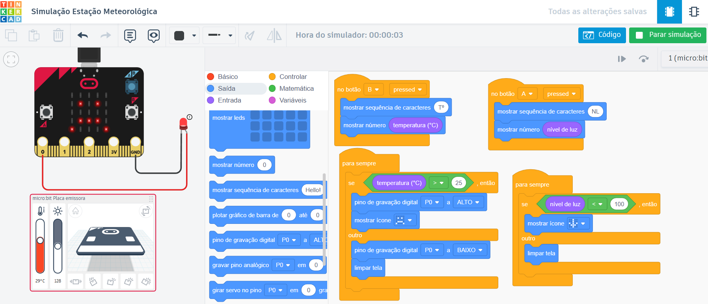
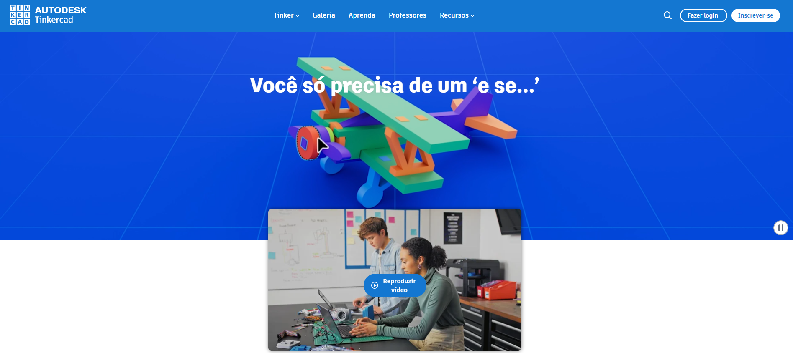
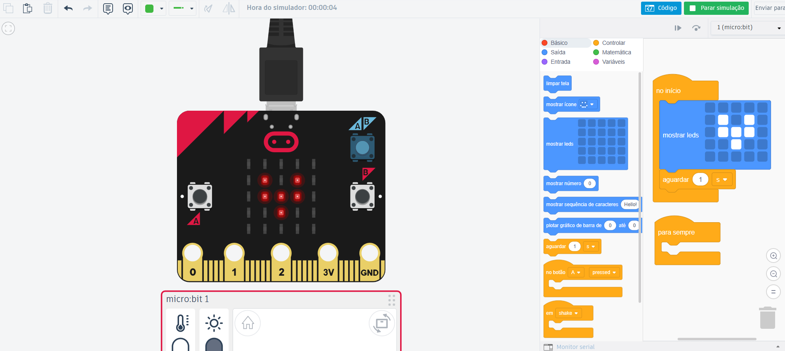
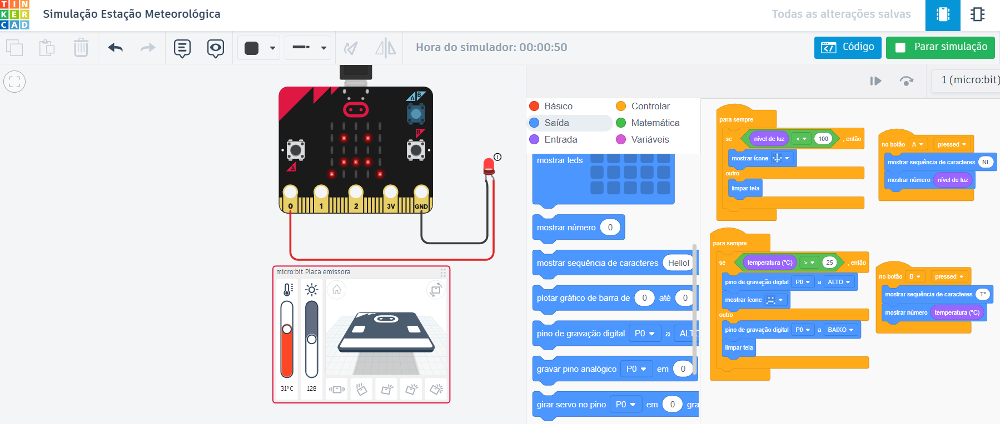
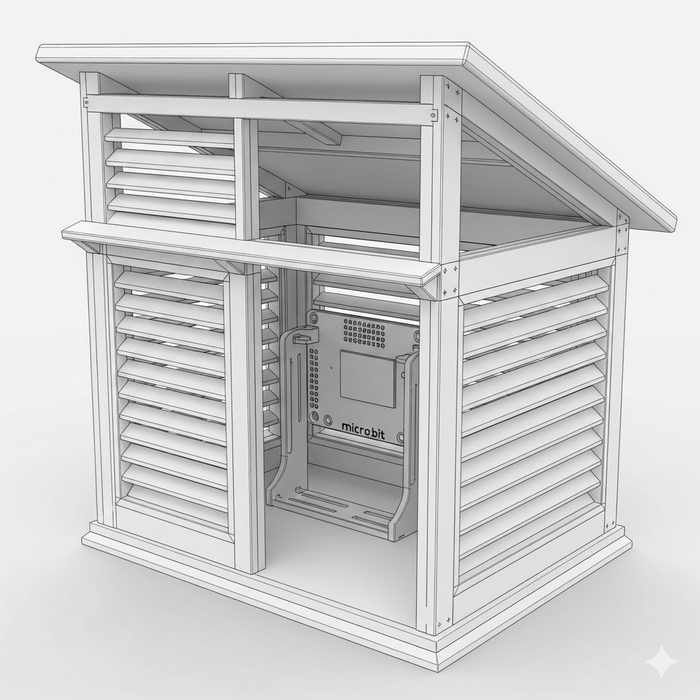
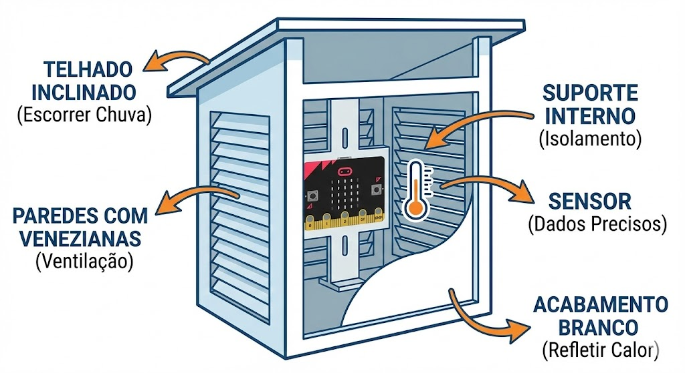
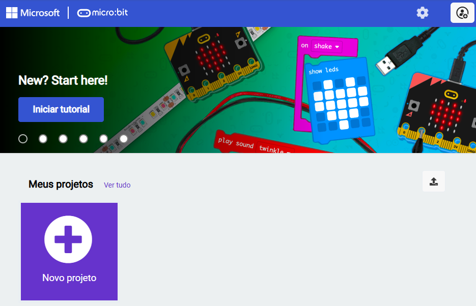

Estação Meteorológica
Nesta oficina, os estudantes serão convidados a construir uma estação meteorológica virtual utilizando o simulador Tinkercad com a placa micro:bit. O projeto consiste em programar a micro:bit para realizar leituras de temperatura e luminosidade, classificar os dados coletados (como quente/frio ou claro/escuro) e acionar alertas visuais (LEDs) ou sonoros (buzzers) com base em limites definidos pela turma. Ao longo da atividade, serão explorados conceitos como sensores, variáveis, condicionais e sistemas de alerta automatizados, aproximando os estudantes da lógica de sistemas embarcados utilizados em contextos reais.
Como desafio complementar, é possível introduzir a comunicação via rádio entre duas placas, simulando uma estação remota que envia dados para uma central de monitoramento. Essa ampliação permite discutir redes, transmissão de dados e integração de dispositivos.
Toda a construção pode ser realizada no ambiente virtual do Tinkercad, com possibilidade de extensão para o uso de placas físicas, caso a escola disponha dos materiais.
Estrutura da Oficina
Materiais
Lista de materiais/softwares/componentes necessários
Preparar
30 minApresentação
Esta oficina propõe o desenvolvimento de uma investigação científica e tecnológica voltada à criação de uma Estação Meteorológica Virtual. Por intermédio da problematização sobre como dispositivos eletrônicos conseguem “perceber” variações do ambiente (como luminosidade e temperatura) e tomar decisões automatizadas, os estudantes serão convidados a compreender os princípios que fundamentam sensores e sistemas de resposta automática.
Utilizando o simulador Tinkercad e a placa micro:bit, será desenvolvido um protótipo capaz de medir temperatura e intensidade de luz em tempo real, classificando esses dados e acionando respostas programadas com base em limites definidos pela turma.
No desenvolvimento do projeto, os estudantes irão elaborar algoritmos com estruturas condicionais e de repetição, organizar o desafio em partes menores (leitura dos sensores, definição de limites, acionamento de alertas e possível transmissão via rádio) e identificar as entradas (sensores de luz e temperatura) e saídas (LEDs, ícones e sinais via rádio).
Ao longo da construção da programação, os estudantes serão incentivados a identificar e corrigir falhas no código, exercitando a prática de debugging. Ao salvar o projeto com nomes classificatórios, compreenderão o conceito de metadados e sua importância na organização da informação em ambientes digitais
No aspecto técnico, a programação da micro:bit envolverá a leitura de dados provenientes dos sensores de temperatura e luminosidade, a definição de limites para classificação dessas informações e o acionamento automático de alertas visuais e sonoros. Como ampliação opcional, poderá ser explorada a transmissão de dados via rádio entre duas placas, a qual simula a comunicação entre uma estação remota e uma central de monitoramento.

helpPerguntas reflexivas
- O que é uma estação meteorológica? Onde vocês já viram uma?
- Como vocês acham que um computador ou uma placa como a placa micro:bit consegue saber se o tempo está quente ou frio?
- Como o termômetro digital se diferencia de um termômetro de mercúrio?
- Vocês já usaram algum simulador antes? O que esperam encontrar no Tinkercad?
- De que maneira os dados de uma estação meteorológica no topo de uma montanha chegam até a nossa televisão ou celular?
O grande destaque da nossa oficina é a placa micro:bit, um microcontrolador programável que possui diversos sensores integrados, como o de luz e o de temperatura. Além disso, ela tem botões, LEDs, buzzers e comunicação via rádio.
No Tinkercad, vamos usar uma versão simulada do micro:bit, com os mesmos componentes. Isso significa que, mesmo sem as placas físicas, é possível programar e testar todos os comportamentos da estação meteorológica.
A simulação é uma ferramenta poderosa para testar ideias, errar sem medo e aprender com os erros antes de partir para o mundo físico. Componentes digitais não queimam, o que reduz a insegurança inicial e incentiva a experimentação.
O educador deve destacar que os sensores de luz e temperatura já estão embutidos na placa, simplificando as conexões iniciais e permitindo foco imediato na lógica de programação.
tips_and_updatesDicas de condução
Embarque
Antes de iniciar a programação do projeto principal, proponha aos estudantes um primeiro contato breve com o Tinkercad, com o objetivo de familiarizá-los com o ambiente de simulação.
Oriente a turma a acessar o site tinkercad.com com o código de aula, selecionar “Criar” e, em seguida, “Circuitos”.
Ao abrir o projeto, no menu de componentes, solicite que localizem a placa micro:bit e a arrastem para a área de trabalho.
Como atividade de introdução, proponha um desafio relâmpago: conceda aproximadamente 3 minutos aos estudantes para que tentem descobrir como acender um dos LEDs da matriz do micro:bit utilizando um bloco de programação, como os blocos de inicialização (“on start”) ou os de repetição contínua (“forever”). Incentive-os a testar diferentes possibilidades e sinalizar quando conseguirem realizar a ação.
Esse momento funciona como uma introdução prática à ferramenta, para evindenciar sua natureza intuitiva. Também possibilita ao educador identificar estudantes que apresentem dificuldades básicas de navegação ou de compreensão da interface.


Criar
105 minProtótipo
Estação meteorológica virtual com o micro:bit



Refletir
45 minAprendizados
Dinâmica de compartilhamento: "Auditoria de estações"
Promova um momento de socialização técnica por meio da dinâmica “Auditoria de estações”. Organize os estudantes para que troquem de lugar com o colega sentado ao lado, a fim de assumirem temporariamente o papel de auditores do projeto desenvolvido.
Sem consultar o código, o estudante deve testar a estação meteorológica do colega e manipular os sensores virtuais para identificar qual é o limite de temperatura programado para acionar o alerta. O objetivo é descobrir, por meio da experimentação, a lógica definida pelo autor do projeto.
Após a identificação do limite, conduza uma breve discussão entre os pares incentivando-os a refletir se o valor escolhido seria adequado para diferentes contextos, como um dia de verão ou de inverno. Encoraje-os a justificar as próprias escolhas com base em critérios ambientais e sociais e reforce a relação entre programação e tomada de decisão.
Finalize destacando que, ao analisar o projeto do colega, os estudantes exercitam a leitura crítica de sistemas automatizados e compreendem que toda programação carrega decisões humanas explícitas ou implícitas.
helpPerguntas reflexivas
- Se o sensor de luz marcasse "0" em razão de um erro técnico, o que aconteceria com nosso sistema automático?
- Como poderíamos criar uma "trava de segurança" no código?
- Como uma rede dessas estações espalhadas pela cidade ajudaria a Defesa Civil em casos de tempestades repentinas?
tips_and_updatesDicas de condução
Para ir além
30 minAtividade 1 – Ampliando o projeto
Para ampliar a complexidade do projeto, incentive os estudantes a aperfeiçoar a lógica da estação meteorológica. Proponha a criação de variáveis que armazenem dados ao longo do tempo, como o maior valor de temperatura registrado durante o dia, fazendo com que a placa exiba não apenas a leitura instantânea, mas também informações acumuladas. Essa ampliação expõe conceitos como armazenamento, comparação de valores e atualização contínua de variáveis.
Como desdobramento interdisciplinar, sugira a conexão do projeto com a Fabricação Digital. Convide os estudantes a imaginar como seria projetar um suporte físico para proteger a placa das condições climáticas, inspirando-se em estruturas reais, como o Abrigo de Stevenson. Oriente a investigação sobre quais características esse abrigo precisa ter para garantir medições precisas – como ventilação adequada, proteção contra chuva e radiação solar direta –, aproximando o protótipo virtual de uma aplicação concreta no mundo real.


Por fim, proponha uma reflexão sobre a integração com IA. Questione como o projeto poderia evoluir caso incorporasse reconhecimento de padrões ou análise automatizada de dados. Embora o Tinkercad não ofereça suporte direto a modelos avançados de IA, é possível explorar extensões em outras plataformas, como o MakeCode, utilizando recursos como o HuskyLens para reconhecimento de voz ou visão computacional. Essa ampliação permite discutir como sensores, microcontroladores e sistemas inteligentes podem atuar de forma integrada em projetos mais complexos.
Atividade 2 – Transmissão de dados com rádio
Para os grupos que avançarem com facilidade e desejarem ir além, esta etapa propõe explorar a comunicação via rádio entre duas placas micro:bit físicas, ampliando o projeto para cenários mais próximos do mundo real, como a coleta de dados em diferentes pontos da sala ou da escola. Além de consolidar a transmissão de dados, a atividade incentiva os estudantes a conhecer uma nova ferramenta de programação (MakeCode) e a desenvolver habilidades em uma plataforma distinta da utilizada até então.
Com as placas físicas, é possível transmitir dados via rádio. Assim, as informações coletadas por um micro:bit podem ser enviadas para outro, simulando uma estação remota que envia dados ambientais para uma central, sem a necessidade de deslocamento físico. Para essa proposta, sugere-se o uso da plataforma MakeCode (makecode.microbit.org), em razão da praticidade na comunicação entre as placas e na montagem dos códigos.
A plataforma MakeCode é um ambiente de programação online gratuito, desenvolvido pela Microsoft. Ele ajuda a programar o micro:bit por meio de blocos visuais (semelhantes ao Scratch) ou por linguagem textual JavaScript. Uma das principais vantagens do MakeCode é que todos os blocos de programação já vêm direcionados especificamente para o micro:bit, com funções prontas para sensores, LEDs, botões e, especialmente, para a comunicação via rádio. Isso torna a programação mais simples e intuitiva para os estudantes. Além disso, ao baixar o código para a placa física, os arquivos gerados apresentam menos erros de compatibilidade, o que garante uma experiência mais fluida e confiável.

A programação no MakeCode é semelhante àquela desenvolvida no Tinkercad. No entanto, cada conjunto de blocos fica em uma placa diferente. Uma placa atua como transmissora (lê os sensores e envia os dados via rádio); a outra, como receptora (recebe os sinais e exibe as informações).